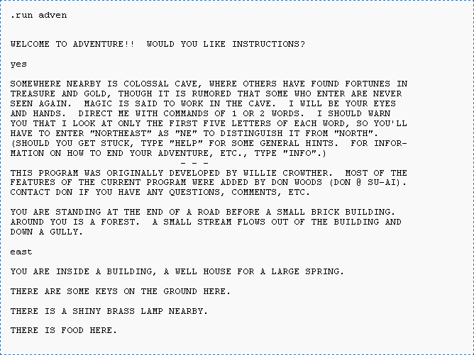
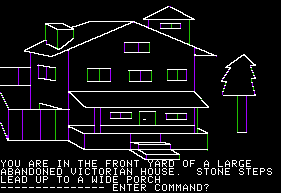
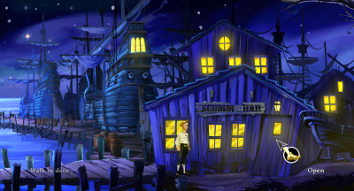
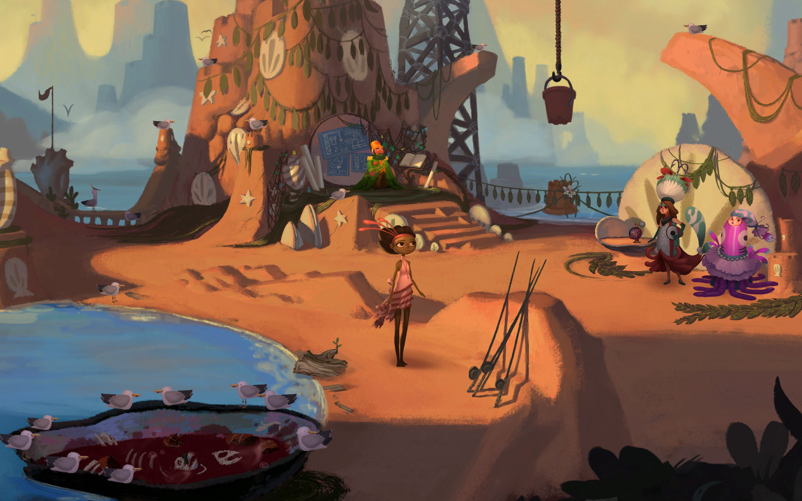
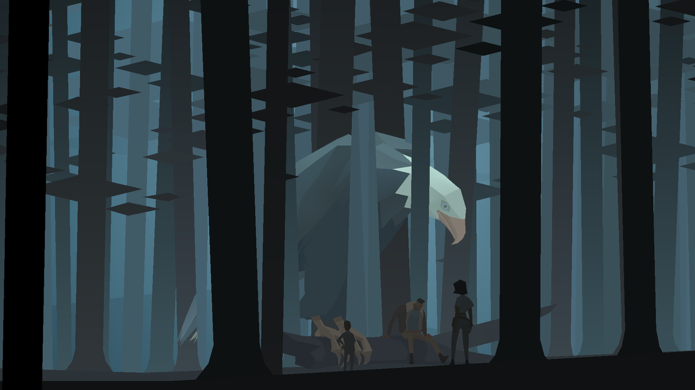

Narrative
Description
For this project, students, either in groups of two or individually, will make a narrative art work using p5.js.
Throughout this course thus far, we have learned about using the fundamentals of code to create artworks. We have also been introduced to using texts, fonts and images within p5.js. The aim of this project is for you to use your new skills in text and image creation, combined with your new knowledge of functions, to create an interactive narrative using p5.js. This project can take a variety of forms including, but not limited to, an interactive text adventure, an interactive photo album with a variety of effects, a point-and-click game, and much further. Begin by exploring the below history of interactive narratives.
Technical Requirements:
- The project uses text and/or images (photographs, drawings, digital paintings, svg images etc)
- The project make use of functions
- The project is interactive (A person can use a mouse or keys to navigate through it). Explore the p5.js reference:
keyPressed(),keyTyped(),keyIsDown(),keyReleased(),keyCode,doubleClick(),mouseMoved(),mouseDragged(),cursor(),mouseReleased(), and others. - The project contains a narrative (This narrative may be poetic, prosaic or experimental)
Optional:
- The project uses the windowWidth and windowHeight variables for the canvas and works with the windowResized() and resizeCanvas() function.
History of Interactive Narratives
A brief and personally biased history of interactive narratives:
Gender and Early Interactive Digital Narratives
While the history of interactive narratives as many digital and non-digital paths, including the 1961 work by Raymond Queneau, A Hundred Thousand Billion Poems, which lead to the creation of Oulipo, a group of experimental writers who use constraints to produce inventive literature, the accepted first interactive digital interactive narrative is Colossal Cave Adventure developed by Will Crowther in 1977. Much has been written on the early origins of Colossal Cave Adventure and for those looking for more information on the work, I highly recommend reading the first chapter of Aubrey Anable’s book, Playing with Feelings, which looks at the role Pat Crowther, Will Crowther’s wife, played in the development of the game. Oftentimes, especially in the history of technology, women are written out of history for their contributions. Anable’s chapter works both correct this history and creates a broader argument for the impact of Colossal Cave Adventure.

Text of Colossal Cave Adventure
In many cases, as is the case with Pat Crowther, her impact has often been deemed to be less important as it was more narrative and story based, with historical retelling of her role adhering to masculinist prejudices that separate skills of women and men into “soft-skills” (narrative) and “hard-skills” (programming), with only hard-skills being of importance. This prejudice becomes a double patriarchal assumption as it both downplays the role of women narrative designers, as well as ignores the historical fact that for much of the early history of computing, programmers were women (see Recoding Gender by Janet Abbate), including the first person to ever write a computer program, Ada Lovelace.
Women programmers of the ENIAC system. (Photo: University of Pennsylvania Archives)
In this way, the history of interactive narrative, contains a variety of works that have mixed labor that is often gendered. This includes the influential 1980 work Mystery House written by Roberta Williams and programmed by her husband, Ken Williams. The game and computer history scholar Laine Nooney has written much about the history of Sierra Online, the company founded by Roberta and Ken Williams, as well as the gendered dynamic of early computing, and discusses much of this research in this podcast.
Ken and Roberta Williams

Mystery House
Net Art and Interactive Narratives
Net Art was an art movement in the early age of the internet, the late 1980’s to the early 2010’s, in which artists used the internet to produce a variety of art works. A full history of Net Art is accessible through Rhizome’s Net Art Anthology, which both traces Net Art’s history and has preserved many of the works from the movement.
Two influential works at the intersection of interactive narratives and net art are Olian Lialina’s My Boyfriend Came Back from the War (1996), which traces the narrative of a couple reuniting after an undisclosed military conflict, and Natatlie Bookchin’s The Intruder (1999), which adapts the Jorge Louis Borges short-story of the same name into an interactive game-based narrative.
My Boyfriend Came Back from the War
For more information on My Boyfriend Came Back from the War:
For more information on The Intruder:
Point and Click Adventures
With the commercial success of many early interactive narratives, including the works of Roberta and Ken Williams with Sierra Online, many companies began to form around the production of interactive narrative games. These games were often called point and click games or adventure games, a nod to the original adventure game, Colossal Cave Adventure. These companies included Lucasfilm Games, a spin off of George Lucas’ production company Lucasfilm, best known for the production of the Star Wars series of films. Lucasfilm Games had a particular focus on combining narrative with the computer games, in a way, mirroring George Lucas’ interest in narrative art in general as seen with the forthcoming opening of the Lucas Museum of Narrative Art set to open in Los Angeles in 2026.
Lucasfilm Games is perhaps best known for their series of early point-and-click adventure games in which players would solve a variety of puzzles by clicking on particular parts of the screen. One influential work in the genre developed by Lucasfilm Games was 1990 work, The Secret of Monkey Island, directed by Ron Gilbert, in which players solve puzzles while exploring a fictional island.

The Secret of Monkey Island
One designer from The Secret of Monkey Island, Tim Schafer, would go to start his own game company, Double Fine Productions. Double Fine, in addition to producing the influential action-adventure game, Psychonauts, would also continue to produce a variety of adventure games including Broken Age

Broken Age
Interactive Narratives Today
Today, interactive narratives can be found everywhere online and have been made much easier to produce through software such as Twine. From the works of artists such as Sam Barlow with his games Her Story (2015) and Immortality (2022), to the artist Everest Pipkin and their work Shell Song (2020), interactive narratives have become both a way to express deep nonlinear stories as well as personal narratives.
Some contemporary interactive narratives I would recommend checking out include:
- Kentucky Route Zero by cardboard computer. “Kentucky Route Zero is a magical realist adventure game about a secret highway running through the caves beneath Kentucky, and the mysterious folks who travel it.” - kentuckyroutezero.com
- The works of Porpentine, including With Those We Love Alive
- Queers in Love at the End of the World by Anna Anthropy
- a-birth.site

Kentucky Route ZeroSubmit
To Discord
- A p5.js edit link as well as p5.js full screen link
- A short paragraph on how the use of p5.js shaped the narrative work you chose to make